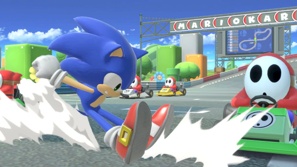

Dealing with games and learning about games is a lot of work, especially when trying to get into the gaming realm. There is a lot of information available, but it can be too much to deal with.
This website will help you understand a little bit about video games, including the popularity of some games, consoles, franchises and companies.
Remember to have fun.
There are thousands of video games of various genres, gaming franchises, companies, countries and oceans of audiences that companies want to capture. All of these factors play into the kinds of games that are produced annually. Also, video gamers will never get tired of playing popular games and exploring the newest games.
Some games have greater popularity than others, depending on the game's intended audience or the reaction of other audiences (one that is getting into video gaming, the critics, parents, etc.). For similar reasons, some games have a negative or positive reputation, which plays into whether games are regularly enhanced or remastered by companies. There are also cult games that aren’t popular on the sales charts but have a passionate following.
Adding on a bit to recognition, some games tend to lose their reputation due to factors such as little-to-bad work on a game, if the creators/developers did something horrendous, fans did not like a change in the game/series (if applicable) and so much more.
Besides the reasons mentioned above, games gain their reputation based on storytelling, characters, character development, music and dialogue. Also, if a game uses some combat mechanics, fans will heavily factor in this when rating a game. On top of all of this, games are an escape from real life, so gamers will always look for an interactive game or one that fulfills their joy meter. This is a heavy factor when ranking a game.
The chances of finding a game based on your choices are pretty high, even if you are not into games or getting your gamer journey started. Most importantly, try finding more games, and have fun with what you are playing unless it is boring. Try finding more games.
Explore the gaming realm!
As stated in the previous section, games gain popularity, positive or negative reactions, or even lose their reputations for many reasons. It is bound to happen when the gaming world is broad and filled with people who have different tastes, but there is always a game that triumphs. The majority of the time, the most-selling, the best or most popular game gets turned into a franchise. This is either great or terrible for the fans, depending on the ending of the game or if they want to play more like it.
Some well-known gaming franchises are Call of Duty (COD), Grand Theft Auto (GTA), Need for Speed, Assassin’s Creed, Mario, Final Fantasy, Tomb Raider, Mortal Kombat and The Sims.
As you can see, all of these franchises have tons of games to choose from. For example, if you want to play any COD game, you can play the Black Ops series or the original Modern Warfare series. Another example is The Sims, you can choose to play either the first game or its latest. The companies make sure to keep their franchise relevant by adding more to the previous games, making new ones that are still related to the content under the franchise and/or remastering/remaking some of their older games.
Some franchises also have a mainline of games. This means that there are games that can add extra details to the mainline games. Additionally, there can be crossover games within a franchise since not all of the games tie in with each other. Unlike the COD series, Final Fantasy is a great example of this. None of their games correlate with one another, but the company has made fighting games that included a lot of its characters from its mainline games. This way, the fans can see the characters interacting with each other, even at a bare minimum.
Knowing the franchises is a great way into starting your gaming journey since you will know where to start. Sometimes, starting with mainstream games is not bad. It is a growing experience, and it will help you think about your favorite details in a game, therefore, looking for more under the same categories.
YouTube Call of Duty
YouTube Official EA UK
Knowing how expansive games and franchises are, there are bound to be crossovers between them. A popular example is Super Mario Smash Bros. Ultimate. There, you will not only see the characters from the Mario franchise but other characters from the Pokémon franchise, The Legend of Zelda series and the Sonic franchise. By creating this crossover, companies entice fans to invest in the game and buy bundles (if applicable) just to see their favorite characters interact with each other (also if applicable).
Crossovers are not only fun for the fans, but also for the companies who invested in the franchise since they earn a great sum of sales.
Overall, crossovers are a great way at finding more games to play since there is a high chance you will find a character that captivated you.
YouTube Super Smash Bros.
Source: www.smashbros.com
Source: www.smashbros.com
The most important aspect of a successful game is its characters. The characters are what give successful games their personality and create fan loyalty. Popular characters include Mario, Sonic, Kirby, Kratos, Link, Scorpion, Cloud Strife and Leon S. Kennedy.
Even though they tend to be the main protagonists, there are other characters fans and video gamers would recognize.
Good luck finding your favorite character. Also, do not get attached to too many characters since you never know what will happen later in the story.
Source: kirby.nintendo.com
Without the voices, characters would seem further away from reality. While everything in the gaming realm is fictional, characters with voices connect with gamers and bring an aspect of reality and appeal to the game.
While it is not a bad thing when a character has no voice, especially if it is an older game, nowadays, all of the characters are voiced, even the non-playable characters (NPC(s)). Bringing them to life through a voice is a wonder.
Adding on, some of the games tend to be made outside of the U.S. so there is some dubbing that will happen. Some fans are with it, against it or do not care about it. Play with whatever language/audio sounds better to you. Ignore other people’s opinions. You are the one playing the games, not them.
YouTube WatchMojo.com
YouTube WatchMojo.com
Video games can be played on consoles. The most popular consoles are the PC, PlayStation, Xbox and Nintendo. Also, on your phone, mobile games are different from console-only games. Knowing this, there tends to be a lot of competition, and decision-making for the consumer, on what console is the next best thing (not big since people care about the quality of the console and its ability to run a game). Although a PC is great for games, people still want to buy games on different platforms. Some reasons are the games sold on the console, the quality of the game, the screen width/height and many more.
Before buying a game, it is important to search for each console and make a pros and cons list for each, comparing them at the end and then buying a console of your choice. Then again, you can do it how I did it, buy the console your friend has to play with them.
Source: www.playstation.com
Without these people, where would we find games to play? They are valuable to the fans, and vice-versa because we all know that without us, the fans, the companies will not strive.
They are the ones responsible for the games, their details, development, release date, trailers and so much more. Without their help, games would not be popular and lose relevancy.
The list below contains the top 10 titles for each category to give you some help on what to start gaming with. Just to let you know, this can always vary due to sales, fan votes and the reputation of each game. Good luck, and have fun!